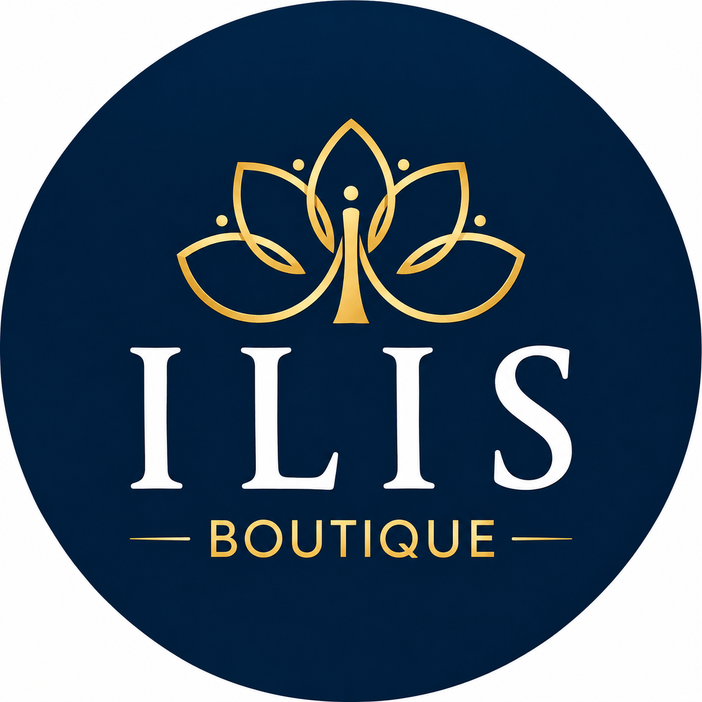
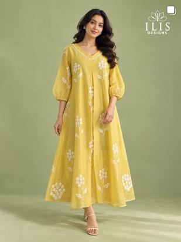

01
Make it yours
Choose your preferred portrait length, angle, setting, lighting and overall mood.

ILISBY MARTHA Create my previewBefore your chosen creation comes to life, discover how it could look on you. Personalize the setting, the light and the mood — and let us bring your vision into view.

A personal touch for an important choice. You choose the vision; we thoughtfully create the look.
Choose your preferred portrait length, angle, setting, lighting and overall mood.
Upload a photograph of yourself and the Ilis Designs outfit you have selected.
Receive a personalized, studio-quality style portrait on WhatsApp, typically within one studio working hour.
For the most natural preview, a little preparation makes all the difference.
I'm ready to beginYour photograph
Choose a clear, well-lit picture of yourself standing alone, with your face visible. A full-length image works best.
Your selected design
Choose a sharp photograph showing the complete garment, including its colour and important details.
Keep it natural
Avoid heavy filters, sunglasses, cropped outfits and busy group photographs. JPG, PNG or WEBP, up to 10 MB per image.
Five thoughtful choices are all it takes to create a preview made for your style.
You're almost there. Add your photo, your selected design and your WhatsApp details using our secure upload form below.
Your photographs are requested only for your personalized preview. The upload form asks for your consent to AI-assisted processing by a third-party service, and the approved result is delivered privately through WhatsApp.
Two expressions of Ilis, united by thoughtful design, craftsmanship and personal attention.
Your personalized portrait is an artistic, AI-assisted visualization — not a photograph of a finished garment. The actual design may vary in fit, colour, drape and detailing. Final measurements and tailoring are always confirmed separately.